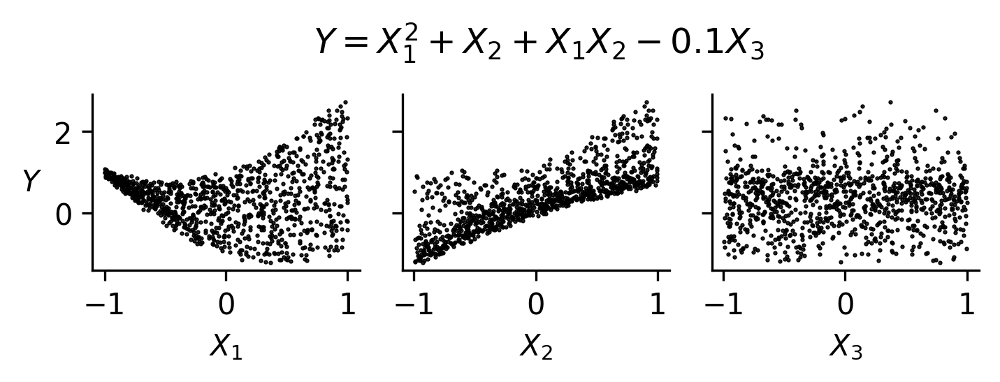
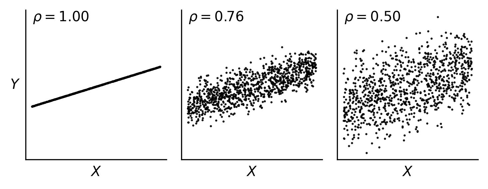
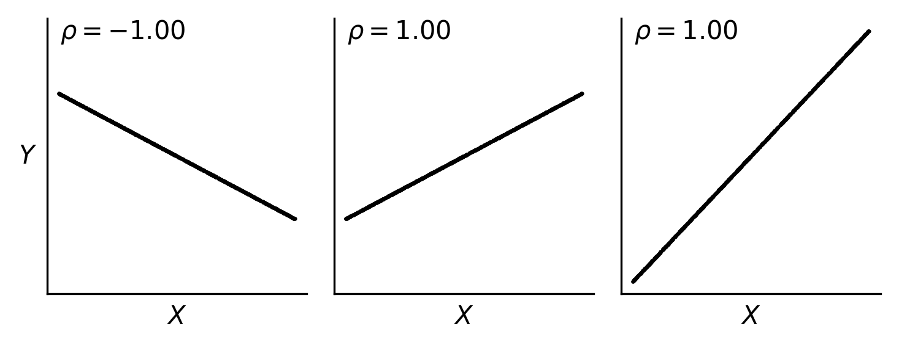
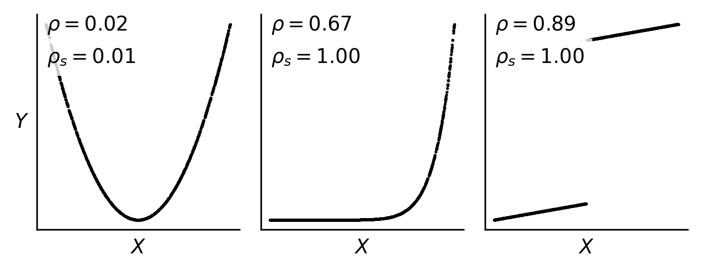
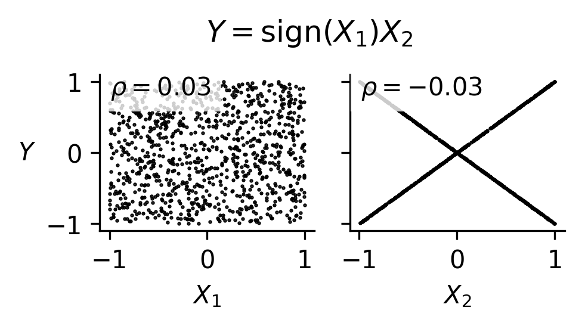

Sensitivity Analysis
Overview
Sensitivity analysis (SA) reveals the extent to which simulation outputs depend on each simulation input. The primary goal is to identify the most important input variables and their interactions, enabling analysts to focus resources on the parameters that matter most. This page summarizes SA concepts and terminology, describes local and global methods for SA as well as parameter studies, and offers usage guidelines.
Sensitivity analysis serves several key purposes in computational modeling:
Screening and ranking: Identify the most influential variables to down-select for further uncertainty quantification or optimization studies.
Resource allocation: Focus data gathering, model development, code development, and uncertainty characterization efforts on the most impactful parameters.
Model understanding: Identify key model characteristics such as smoothness, nonlinear trends, and robustness, while developing intuition about model behavior.
Quality assurance: SA can reveal code and model issues as a side effect of systematic parameter exploration.
Surrogate construction: Data generated during SA studies can be repurposed to construct surrogate models for subsequent analyses.
Sensitivity analysis methods can be broadly categorized by their scope (local vs. global) and by the metrics they produce for quantifying parameter influence.
Local Sensitivity
Local sensitivity analysis examines how the response changes with respect to small perturbations around a single point in parameter space. The classic measure of local sensitivity is the partial derivative of the response with respect to each parameter:
Local sensitivity provides information about the slope of the response surface at the nominal point \(x_0\). This can be useful for understanding instantaneous rates of change, but may not capture the full picture if the response is highly nonlinear or if the parameter ranges of interest are large relative to the local curvature.
Dakota supports this type of study through numerical finite-differencing or retrieval of analytic gradients computed within the analysis code. The desired gradient data is specified in the responses section of the Dakota input file and the collection of this data at a single point is accomplished through a parameter study method with no steps. This approach to sensitivity analysis should be distinguished from the activity of augmenting analysis codes to internally compute derivatives using techniques such as direct or adjoint differentiation, automatic differentiation, or complex step modifications. These sensitivity augmentation activities are completely separate from Dakota and are outside the scope of this manual. However, once completed, Dakota can utilize these analytic gradients to perform optimization, uncertainty quantification, and related studies more reliably and efficiently.
Global Sensitivity
Global sensitivity analysis assesses the relative influence of parameters over the entire input space, either between upper and lower bounds or over the support of the parameters’ probability distributions. Rather than examining behavior at a single point, global SA characterizes how parameters affect the response over the range of plausible parameter values.
- Global SA addresses questions such as:
What is the general trend of the response over all values of a parameter?
Does the response depend more nonlinearly on one factor than another?
How do parameters interact to influence the response?
Global SA is performed by evaluating the response at well-distributed points in the input space and analyzing the resulting input/output pairs. Dakota primarily focuses on global sensitivity analysis methods.
Various metrics and approaches can quantify parameter influence, each with different interpretations and computational requirements:
Scatterplots
Scatterplots are a simple, but highly effective, visualization-based sensitivity analysis technique performed using external software and the input-output samples generated by a Dakota study. To generate scatterplots, samples are projected down so that one output dimension is plotted against one parameter dimension, for each parameter and output in turn. Scatterplots with a uniformly distributed cloud of points indicate parameters with little influence on the results, while scatterplots with a defined shape to the cloud indicate parameters which are more significant.
Scatterplots are a primary diagnostic tool for interpreting sensitivity analysis results. They can reveal:
Monotonic or non-monotonic relationships
Nonlinear trends (e.g., saturation, thresholds)
Interaction effects (e.g., changing output variation as a function of multiple inputs)

Fig. 47 An example of scatterplots for a function exhibiting nonmonotonic, nonlinear relationships, and interactions. Since \(X_3\) exhibits little to no trend, it may not be an influential parameter.
Unlike quantitative sensitivity metrics, scatterplots:
Don’t provide a scalar measure of importance or ranking
Are conditional on the sampled input space
Require interpretation
However, they are essential for:
Validating assumptions behind sensitivity metrics (e.g., monotonicity for correlation)
Diagnosing misleading or ambiguous metric values
Identifying structure that may motivate surrogate modeling choices
Scatterplots are most effective when used in conjunction with sampling-based methods (e.g., Latin hypercube sampling), where the input space is well covered.
Limitations:
They can become difficult to interpret in high-dimensional problems
They don’t isolate interaction effects without additional visualization
Correlation coefficients
Correlation coefficients, computed from sampling
data, measure the strength of linear or monotonic relationships between two
quantities. Correlations can be computed between input parameters, between
output responses, and between inputs and outputs. They are inexpensive to
compute from existing samples. As such, they are computed by default as part
of the results of a sampling study. For the purposes of
sensitivity analysis, this discussion focuses on correlations between inputs
and outputs.
The sample (Pearson) correlation coefficient measures the strength of the linear relationship between an input and an output, ignoring all other inputs. Their efficacy can break down as a sensitivity measure if the relationship is nonlinear.
The rank (Spearman) correlation coefficient measures the strength of the monotonic relationship between an input and an output, ignoring all other inputs. For this reason, they are robust to nonlinear monotonic relationships, but can break down for non-monotonic cases.
Partial correlation coefficients measure correlation between inputs and outputs, after removing linear effects of other inputs. In this sense, they control for other inputs in the computation of correlation between a given input and output. However, their accuracy can degrade when the sample size is small relative to the number of inputs (e.g., less than 10-20x the number of inputs).
Correlation coefficients can struggle in the following contexts:
non-monotonic, nonlinear input-output relationships
correlated inputs
input-output relationships driven by interactions between inputs
noisy input-output relationships
Below are examples, with scatterplots, showing how simple correlations behave in a range of scenarios.

Fig. 48 For the same underlying function, increasing noise in the response decreases the computed correlation coefficient. The Pearson correlation coefficient \(\rho\) is shown here.

Fig. 49 Correlation coefficients aren’t impacted by the magnitude of slope of a linear relationship; they are only influenced by the direction (upward or downward) and the strength of the linear relationship (how closely points fall on a line).

Fig. 50 Pearson and Spearman correlation coefficients (\(\rho\) and \(\rho_s\), respectivey) can diverge for monotonic, nonlinear or discontinuous functions. They both can fail to identify a significant relationship for non-monotonic relationships.

Fig. 51 Correlation coefficients can fail to identify significant relationships for functions driven by interactions between inputs, as is shown in this example.
Standardized regression coefficients
Standardized regression coefficients, computed from sampling data, measure the change in output responses (in standard deviation) per standard deviation change in the input. In contrast to correlation coefficients, they are robust to correlated inputs.
They are inexpensive to compute from existing samples, where inputs and outputs are standardized (i.e., mean=0, std=1), and a multiple linear regression is performed on the standardized quantities. The standardized regression coefficients are the coefficients in the linear regression model.
Standardized regresion coefficients can be optionally computed in the results
of a random sampling study. Keyword reference:
std_regression_coeffs
As with correlation coefficients, the standardized regression coefficients are not robust to nonlinear or non-monotonic input-output relationships, or relationships driven by interactions between inputs.
Morris one-at-a-time (elementary effects) method
The Morris one-at-a-time (MOAT) method is a global approach to screen out unimportant inputs. The algorithm is described in detail in the PSUADE MOAT documentation.
At a high level, the method creates a distribution of elementary effects for each input. Elementary effects are computed at random points using forward finite differences with large step sizes.
From this sample set, the following metrics are computed:
Modified mean (\(\mu^*\)): The average absolute value of elementary effects. Large values indicate the input has a significant effect on the output.
Standard deviation (\(\sigma\)): The spread of elementary effects across the input space. Large values indicate either nonlinear effects or interactions with other inputs.
Inputs with high \(\mu^*\) are influential and should be retained for subsequent analyses. Inputs with high \(\sigma\) relative to \(\mu^*\) exhibit strong nonlinear behavior or interactions.
The number of model evaluations to compute a size \(r\) ensemble of elementary effects for \(d\) inputs is \(N=r(d+1)\). A common first choice for \(r\) is \(\sim 10-20\), then increasing as needed to achieve stability in the computed metrics.
Morris sensitivity metrics can be a useful tool for screening out unimportant inputs at relatively low computational cost while being robust to nonlinear input-output relationships and relationships driven by interactions. However, they have some downsides:
Input-output samples generated by the algorithm are not independent, identically distributed, so are poorly suited for reuse in Monte Carlo-based uncertainty analysis.
While they can provide an indication of the presence of nonlinearity or interaction effects, they can’t distinguish between the two or attribute output variance to specific inputs.
Sobol’ Indices/Variance-Based Decomposition
Sobol’ indices are variance-based global sensitivity measures derived from the functional ANOVA decomposition of a model.
Let \(Y = f(X_1, \ldots, X_d)\), where the inputs are independent. The ANOVA decomposition represents the function as
where the functional terms of the decomposition are orthogonal and are defined recursively as
and so on. Assuming \(f\) is square integrable, taking variance on both sides gives
where
and so on.
This variance decomposition shows how the variance in the model output can be attributed to each input individually, as well as the effects of interactions between inputs. By definition, all terms sum to the total variance of the output.
First-order (main effect) Sobol’ indices meaure the fraction of total variance in \(Y\) that can be attributing to varying \(X_i\) alone. They are defined as
Higher-order Sobol’ indices measure the fraction of variance in \(Y\) that can be attributed to interactions between inputs and are defined as:
Total-effect Sobol’ indices quantify the total contribution of an input to the output variance, including all interactions. They are defined as
where the numerator is sum of all terms in the ANOVA decomposition involving input \(X_i\).
Important notes for interpreting Sobol’ indices (assuming inputs are statistically independent):
All indices are bounded between 0 and 1.
Main effects sum to \(\leq 1\). If they sum to significantly less than one, interaction effects are significant.
If \(S_i = T_i\), there are no interaction effects.
If \(S_i\) is close to 0, \(X_i\) may be influential through interaction effects.
If \(T_i\) is close to zero, \(X_i\) is not influential.
More details on the calculations and interpretation of the sensitivity indices can be found in [STCR04].
Sobol’ indices are robust to nonlinear, non-monotonic input-output relationships and to relationships driven by interactions between inputs. In contrast to all other previously discussed global sensitivity metrics, Sobol’ indices provide quantitative attribution of output variations to inputs, enabling assessment of the contribution to variance from individual inputs, their interactions, etc. However, they can be computationally challenging to compute, and their interpretation breaks down for correlated inputs.
Dakota provides two main approaches for computing Sobol’ indices, a.k.a. variance-based decomposition (VBD):
Polynomial Chaos Expansion (PCE)
Sampling-based
The sampling-based methods are activated via the
variance_based_decomp keyword for sampling methods.
There are two sampling-based algorithms available:
Saltelli Pick-and-Freeze
Binned
Implementation details for the Saltelli and PCE-based Sobol’ index estimators in Dakota are provided in [WKS+12]. Details of the binned implementation are provided in [LM16] (Method B).
VBD via Polynomial Chaos Expansion:
For smooth response functions, polynomial chaos expansions (PCE) provide an efficient means of computing Sobol’ indices. Once a PCE surrogate is constructed, Sobol’ indices can be computed analytically from the expansion coefficients at negligible additional cost.
method
polynomial_chaos
quadrature_order 4
variance_based_decomp
variables
uniform_uncertain 7
descriptors 'w' 't' 'L' 'p' 'E' 'X' 'Y'
lower_bounds 0.5 0.5 5.0 450.0 2.4e+7 1.0 5.0
upper_bounds 1.5 1.5 15.0 550.0 3.4e+7 10.0 15.0
PCE-based VBD is particularly attractive when:
The response is smooth and well-approximated by polynomials
The PCE can be reused for other analysis tasks such as uncertainty quantification
Interaction effects are important (interaction effects are represented in the PCE basis, subject to truncation scheme)
PCE can also be constructed from pre-existing sampling data using the
import_build_points_file keyword, enabling VBD analysis without
additional simulation evaluations.
VBD via Saltelli Pick-and-Freeze:
The Saltelli sampling method (which we also call pick-and-freeze) employs structured sampling to compute the full set of main- and total-effect Sobol’ indices for all parameters, using \(N(d+2)\) samples for \(d\) parameters for \(N\) independent samples. While the Saltelli method can be used to compute interaction effects, the Dakota implementation does not support this.
method
sampling
sample_type lhs
seed 52983
samples 500
variance_based_decomp
vbd_sampling_method pick_and_freeze
VBD via Binned Approach:
The binned method computes main-effect Sobol’ indices for all parameters using \(N\) independent samples.
method
sampling
sample_type lhs
seed 52983
samples 500
variance_based_decomp
vbd_sampling_method binned
Parameter Studies
Parameter studies systematically explore the parameter space along specified directions or at specified points. While parameter studies are described in detail in Parameter Study Methods, the centered parameter study is particularly useful for initial sensitivity screening.
Centered Parameter Study
The centered_parameter_study
varies each parameter along its axis, about a central point.
The centered parameter study requires specifying:
initial_point: The central point around which parameters are variedsteps_per_variable: Number of steps to take in each direction for each parameterstep_vector: Step size for each parameter
method
centered_parameter_study
steps_per_variable 5 2
step_vector 0.1 0.5
variables
continuous_design 2
descriptors 'power' 'expPBM'
initial_point 1.0 2.0
The resulting data shows how the response changes as each parameter is varied while holding others constant. Large response variations indicate potentially influential parameters, while flat profiles suggest parameters may be candidates for fixing at nominal values.
Note that parameter studies are generally analyzed through visualization and don’t provide sensitivity metric or sensitivity ranking like other methods described on this page.
Method Summary
The following table summarizes Dakota’s sensitivity analysis methods and the metrics they provide:
Category |
Dakota Method |
Univariate Trends |
Correlations |
Morris Metrics |
Sobol Indices |
|---|---|---|---|---|---|
Parameter Studies |
|
P |
|||
|
P |
P |
|||
Sampling |
|
P |
D |
||
|
P |
D |
D |
||
Morris |
|
D |
|||
Stochastic Expansions |
|
D |
D: Dakota-generated; P: Post-processing required with third-party tools
Usage Guidelines
This section provides guidance for selecting sensitivity analysis methods based on model cost, input dimension, response characteristics, and intended downstream use.
Available methods for sensitivity analysis in Dakota, or via postprocessing Dakota output, include:
Centered parameter studies (one-at-a-time, conditional)
Scatterplots (visual diagnostics)
Morris one-at-a-time (MOAT) screening
Random sampling (e.g., Latin hypercube) with:
Correlation coefficients (Pearson, Spearman, partial)
Standardized regression coefficients (SRC)
Binned Sobol’ main-effect indices
Saltelli sampling for Sobol’ indices (main and total effects)
Polynomial chaos expansions (PCE) for Sobol’ indices
The choice of method depends primarily on: - Computational cost per model evaluation - Number of input variables - Smoothness and structure of the response - Whether model evaluations should be reusable - Downstream analysis goals (optimization, surrogate modeling, UQ)
Model cost considerations - Very Expensive Models
When the number of model evaluations is severely limited (i.e., \(N \lesssim 100\) overall or \(N \lesssim 10 \, d\) to \(20 \, d\) where \(d\) is the number of input variables):
Use Morris one-at-a-time screening for global sensitivity
Supplement with centered parameter sweeps or scatterplots for diagnostics
Random sampling-based screening can be effective, but Morris designs generally provide more stable sensitivity rankings for the same computational cost.
Avoid:
Saltelli Sobol’ indices (high cost)
Large random sampling designs
Moderate Cost Models
When a moderate number of evaluations is feasible (i.e., \(N \sim 100 - 1000\) or \(N \sim 10 \, d\) to \(100 \, d\)):
Generate a random sample (e.g., Latin hypercube sampling)
Compute:
Correlation coefficients
Standardized regression coefficients
Binned Sobol’ main-effect indices
Compare to scatter plots to corroborate computed metrics
Advantages:
A single dataset supports multiple sensitivity metrics
Enables reuse for surrogate modeling and uncertainty quantification
Cheap Models
When model evaluations are inexpensive:
Use Saltelli sampling to compute Sobol’ indices (main and total effects)
Optionally compare with correlation or regression-based measures
Input Dimension Considerations
High-Dimensional Problems (e.g., \(d \gtrsim 20-30\))
Problems with tens to hundreds of inputs are considered high-dimensional. In this regime, the number of model evaluations required for many sensitivity metrics grows rapidly with the number of inputs.
Prefer:
Morris screening (cost scales linearly with dimension, but with few samples)
Correlation or SRC from random samples (independent of dimension)
Use caution with:
Saltelli Sobol’ (cost scales with dimension and require more samples)
High-order PCE unless sparse/adaptive methods are used
Recommended goal:
Screen out unimportant variable before applying more expensive methods
Moderate-Dimensional Problems (e.g., \(d \approx 5-20\))
In this range, most methods are feasible with moderate computational effort.
Viable approaches:
Random sampling with correlation or SRC
Binned Sobol’ indices (main effects only)
Morris screening
Saltelli Sobol’ indices (budget permitting)
PCE (often practical)
Recommended goal:
Combine screening with more quantitative methods as needed
Low-Dimensional Problems (e.g., \(d \lesssim 5-10\))
With relatively few inputs, more comprehensive methods become practical, and screening methods such as MOAT are typically unnecessary
Prefer:
Sobol’ indices (Saltelli can be tractable)
PCE-based Sobol’ indices
Advantages:
Interaction effects can be more fully explored
High-fidelity variance decomposition is feasible
Model Smoothness
Smooth Responses
If the model is smooth and well-approximated by polynomials:
Use PCE-based Sobol’ indices
Advantages:
Analytical computation of Sobol’ indices
Surrogate can be reused for UQ and optimization
Caveats:
Efficiency depends on input dimension, since the number of PCE terms (and correspondingly, the number of model evaluations to approximate them) grows rapidly with input dimension and polynomial order.
PCEs will be most effective when the response admits a sparse representation (e.g., is dominated by low-order terms and limited interactions).
High-dimensional problems may require sparse or adaptive truncation strategies to remain tractable.
Non-smooth or Unknown Structure
Start with:
Morris screening
Spearman correlation
Be cautious with:
Regression-based methods
Low-order PCE
Downstream Use Cases
Reusable Sampling Designs
If model evaluations should be reused:
Prefer random sampling designs (e.g., Latin hypercube)
These support:
Sensitivity analysis (correlation, SRC, Sobol’)
Surrogate modeling
Uncertainty quantification
Avoid relying solely on:
Morris (design-specific)
Saltelli sampling (specialized for Sobol’ estimation)
Surrogate Modeling
For building surrogate models:
Use space-filling random samples
Optionally construct PCE or other surrogates
Avoid:
Centered parameter studies
Morris designs (poor coverage of input space)
Optimization
If optimization is the primary goal:
Use sensitivity methods for insight and screening:
Centered parameter studies
Scatterplots
Correlation or MOAT
Uncertainty Quantification
For full uncertainty quantification:
Prefer:
Sobol’ indices (Saltelli or PCE-based)
Surrogate-based sensitivity analysis
Avoid relying solely on:
Correlation coefficients
Morris screening
Method Roles and Limitations
Centered Parameter Sweeps
One-at-a-time variation of a single input over its specified range while holding other inputs fixed.
Provides a one-dimensional conditional response:
\[f(x_i \mid x_{-i} = x_{-i}^*)\]Useful for:
Visualizing response shape (linearity, saturation, thresholds)
Identifying inputs with strong influence along the chosen slice
Diagnosing model behavior
Limitations:
Results are conditional on the fixed values of other inputs
Do not account for variability in other inputs
Do not capture interactions unless additional sweeps are performed
Not a global sensitivity measure
Scatterplots
Reveals trends, monotonicity, nonlinear behavior, and interaction effects
Useful for exploratory analysis and comparing to computed metrics
Morris One-at-a-Time
Efficient global screening method
Detects nonlinearity and interactions qualitatively
Does not provide variance decomposition
Correlation and SRC
Low-cost, easy to compute
Suitable for monotonic or near-linear models
Limited in capturing interactions and non-monotonic effects
Binned Sobol’ Indices
Approximate main effects using existing samples
Exploits reusable random samples
Don’t provide total-effect indices
Saltelli Sobol’ Indices
Provide quantitative main and total effects
Capture interactions
High computational cost and specialized sampling design
PCE-Based Sobol’ Indices
Efficient for smooth models
Provide analytical variance decomposition
Depend on quality and structure of the surrogate
Summary
Use Morris for low-cost screening
Use random sampling when reuse and flexibility are important
Use Sobol’ indices for quantitative variance attribution
Use PCE when the model is smooth and surrogate reuse is desired
Use sweeps and scatterplots for conditional response insight and diagnostics
Practical Tips
For studies where the number of model evaluations isn’t influenced by the number of inputs (e.g., random sampling), include a “dummy” variable in your sensitivity analyses that is not used in the model. This lets you assess how well a noninfluential input is identified by your sensitivity metric of interest for your given sample set.
Assess convergence of sensitivity metrics by considering incremental increases in the number of model evaluations/samples (incremental studies or increased sample size exploiting Dakota’s restart capability mean you don’t repeat model evaluations).
Whenever possible, use plots (e.g., scatter plots) to confirm conclusions.
References
For more detailed treatments of sensitivity analysis theory and methods, consult:
J. C. Helton and F. J. Davis. Sampling-based methods for uncertainty and sensitivity analysis. Technical Report SAND99-2240, Sandia National Laboratories, Albuquerque, NM, 2000.
A. Saltelli, S. Tarantola, F. Campolongo, and M. Ratto. Sensitivity Analysis in Practice: A Guide to Assessing Scientific Models. John Wiley & Sons, 2004.
Additional information is available in the Dakota User’s Manual sections on:
Corresponding keyword reference pages provide detailed information on method options and settings.
Video Resources
Title |
Link |
Resources |
|---|---|---|
Sensitivity Analysis |
||
Scatterplot Analyses |
||
Sobol’ Indices |